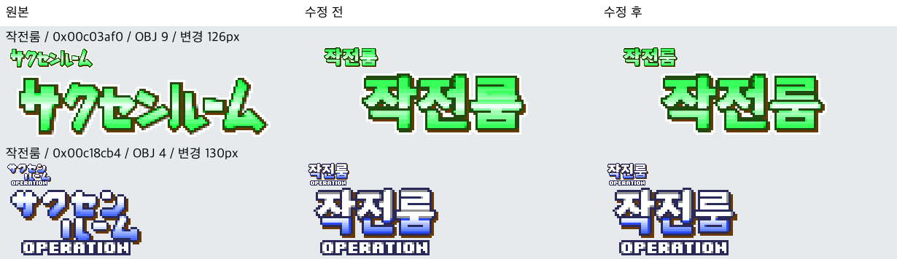
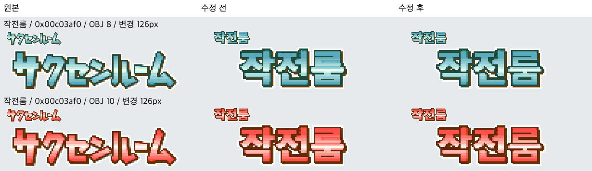
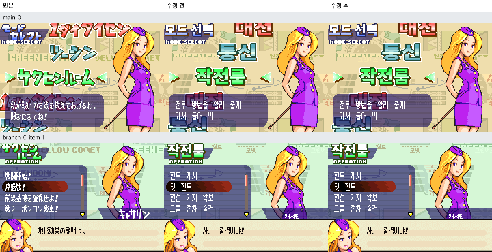

왼쪽: 원본 · 가운데: 수정 전 · 오른쪽: 수정 후
검토 중인 부분 작업: 2개 컨테이너 중 2개 변경. 2개 캡처에서 1개 자산의 OAM/VRAM 사용을 관측했습니다. 전체 한글화 스프라이트 수정 완료나 전체 화면 검증을 뜻하지 않습니다.
미관측 자산: 0xc18cb4
이 비교본은 배포 승인본이 아닙니다. 작은 제목의 영어는 원본에서 복원했습니다.
자산 시트의 색상 변형은 원본에서 캡처한 팔레트로 재조립한 비교이며, 아래 인게임 시트는 각 ROM의 새 부팅 캡처입니다.
sprites_01.png

palette_variants_01.png

ingame_01.png
